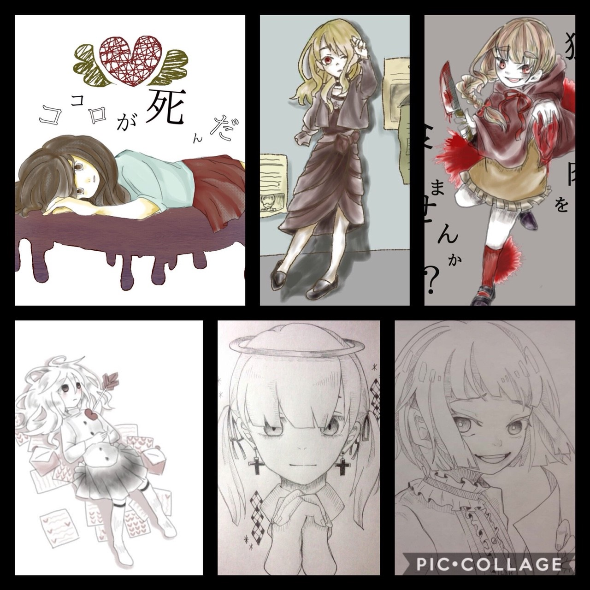
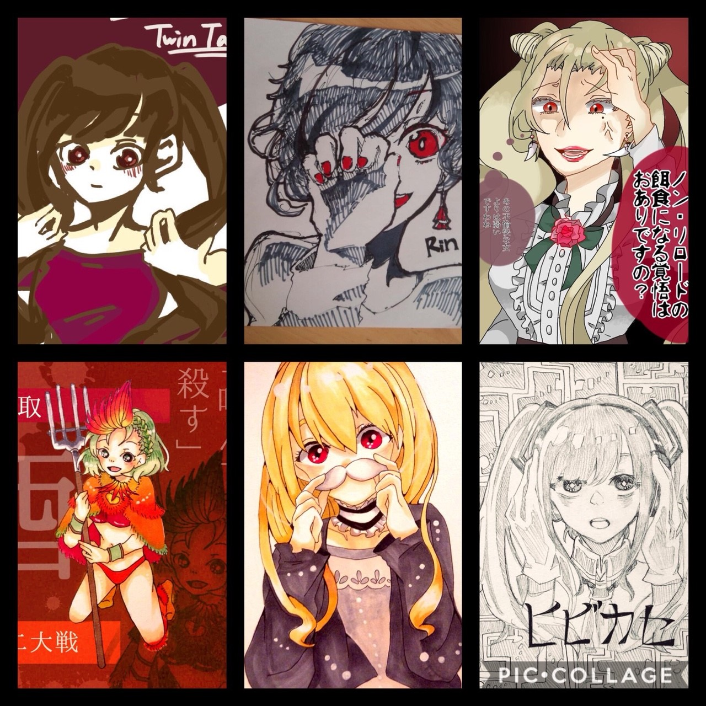
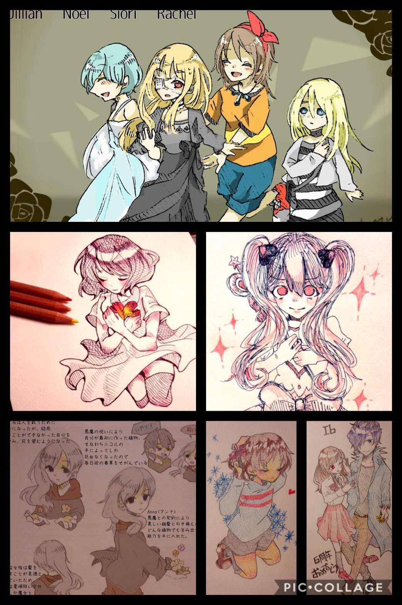
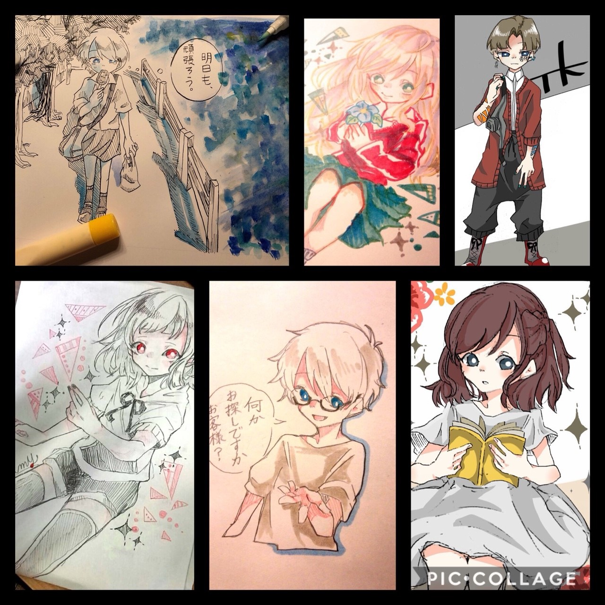
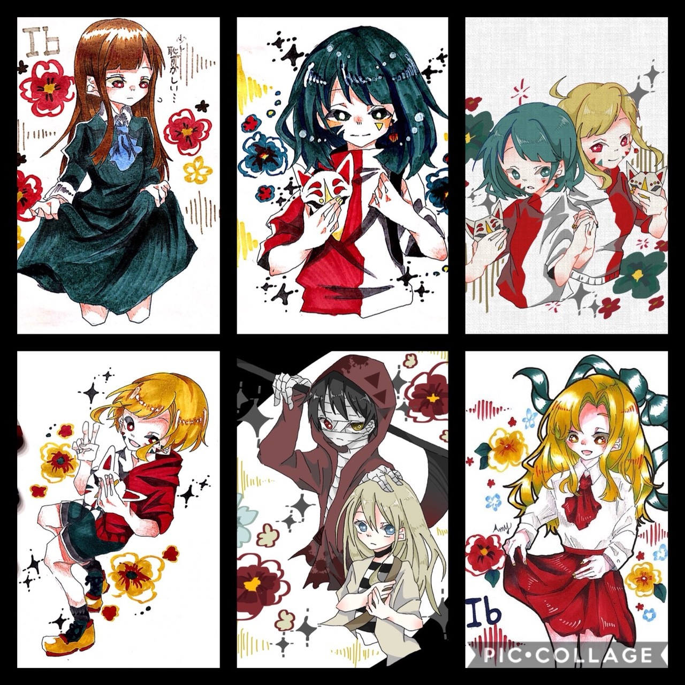
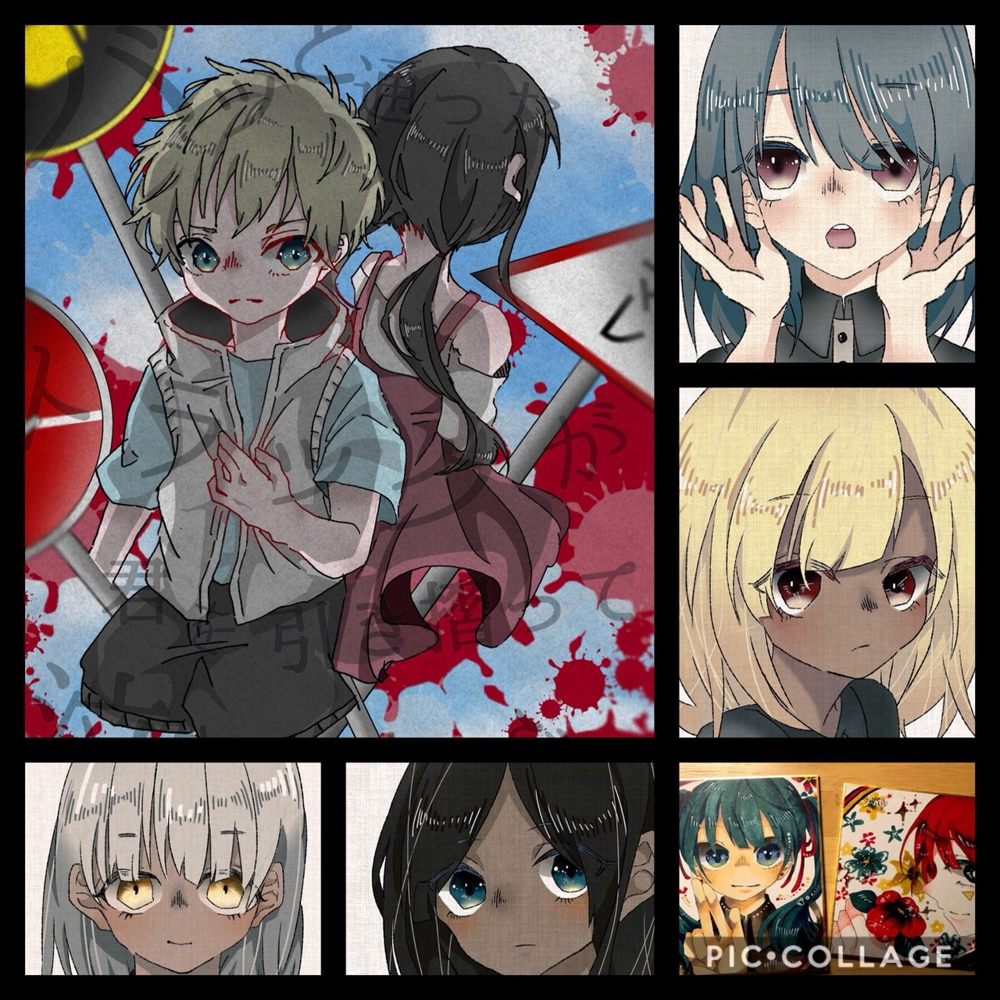

2018/08/19
またまたこんばんちゃー！Ａｍｙだ！！
昨日の宣言通り今日も更新したけど
極端だなー…自分。
更新頻度がまちまちで申し訳ね…(´･ω･`)
まぁ細々とでも続けられれば良いのだ！
そうだよねハム太郎！！
「まったくもってそうなのだ！！へけ！！！！！」
それはともかく。
今日はね、Twitterで最近挙げてた絵の
総集編をしようと思うのです!
というのも今、Twitterを始めて約一年半ほど経つんだけど
意外と多くの絵を挙げていまして
意外と多くない！？
もちろん全部が絵の画像ではないけども。
にしたっていつの間にかこんなに挙げてたんだなぁ～
私は割と遅筆だから、ちょっと驚きだぁ
この数だから全部は無理だけど
時期ごとに少しずつまとめてみた！
これは去年の５～８月までのかな。
 こっちは去年の冬…？あたりだったような(うろ覚え)
 これは確か今年の！えーー…春？？？
 これならわかる！！今年の夏だーー！！
…記憶力ポンコツすぎる…
でもやっぱこうしてみると、沢山描いてんね
こうやってまとめると絵柄の変遷もあって面白いや！
そして後半ほぼ創作だ（笑）
もしかしたら初期からTwitterで繋がっている人は
全部みたことあるかもだね
なんか恥ずかしっ！
これからももしかしたら絵柄どんどん変わっていくのかな
楽しみなような不安なような。
まぁ自分の好きな絵を描き続けられれば良き！
ではでは今日はこの辺で！ばははーい！